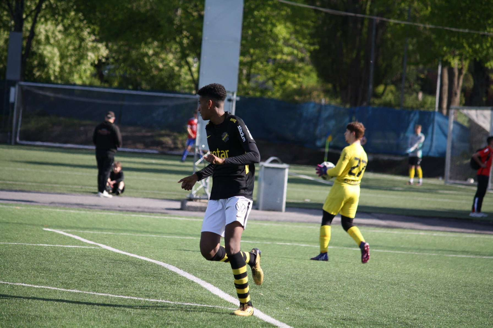

My skills
Here are few things im passionate about and skilled in. Click on "Read more" to learn more about each one.
Football
Football has been a big part of my life since I was a kid. I started playing at a young age and later joined the AIK youth academy when I was 12 years old. Playing football has taught me valuable skills such as teamwork, leadership, discipline, and perseverance. Even though I had to stop playing after a knee injury, my passion for the sport remains strong.
Computer & Programming

My interest in computers and programming began during high school when I studied the Electrical and Energy program with a focus on computer systems. I quickly realized how creative and logical programming can be, and decided that I want to build my future around it. I enjoy working with computers, solving problems, and learning about technology and programming.
Games
I love playing video games and exploring different game genres, from action to strategy. Gaming has not only been a source of entertainment for me but also a way to connect with friends and improve my problem-solving skills. I enjoy the immersive experiences that games offer and the creativity involved in game design.